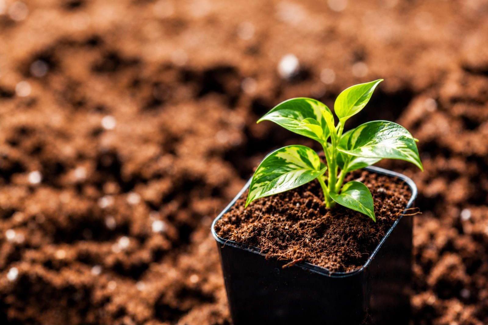

Growing a Greener Future
Growing media
Growing media, which includes coco peat blocks and coco husk chips, for growers, nurseries and potting mix makers.
- AddressPollachi, Tamil Nadu, India
- Phone and WhatsApp+91 80724 38128
- Emailinfo@origencoco.com
Growing a Greener Future
Growing media, which includes coco peat blocks and coco husk chips, for growers, nurseries and potting mix makers.
Who we are
Origen Coco supplies a comprehensive range of coconut-based products to growers, importers, distributors and industrial buyers. Backed by approximately 10 years of experience supplying the Indian market, we combine farmer-direct sourcing, careful product preparation and a customer-focused approach to serving domestic and international markets.
We understand that successful supply partnerships depend on more than the product itself. Consistent specifications, competitive commercial terms, clear communication and dependable shipment planning are central to the way we aim to do business.

Our aim is to become an internationally recognised brand in the coconut product industry. To us, this means being able to provide high-quality products that are consistent, professional services that simplify the process of international trade, and a greener future where natural products and renewable resources rule the industry.
Our mission is to provide high-quality coco peat and coco husk chips, quality copra, coconut fibre, and coconuts according to international standards. To achieve this goal, we make efforts to source products responsibly by procuring them from local farmers and applying a tested system of farming and production to guarantee timely deliveries to our clients.
Growing media · 01
Washed, dried, and compressed coir pith that expands into a light, moisture-holding growing medium.
Coco peat is the fine, spongy pith left when coconut husk is separated into fibre. It is a natural, renewable alternative to peat moss that holds plenty of water without turning heavy or waterlogged.
At Origen Coco, we wash the pith to lower its salt content, dry it to the right moisture level, and press it into compact blocks that are easy to store, stack, and ship. Add water, and the block expands into a light, fluffy growing medium for bags, pots, trays and nursery mixes. Its compact form also makes it easier and more cost-effective to transport than loose coco peat.
Suitable crops
| Item | Details |
|---|---|
| Block types | To be confirmed |
| Grades | To be confirmed |
| Packing | To be confirmed |
| Container loading | To be confirmed |
| Custom options | To be confirmed |
| Parameter | Value |
|---|---|
| Electrical conductivity (EC) | To be confirmed |
| pH | To be confirmed |
| Moisture content | To be confirmed |
| Block weight | To be confirmed |
| Compressed dimensions | To be confirmed |
| Expansion volume | To be confirmed |
| Sand/fibre/impurities | To be confirmed |
Growing media · 02
Diced husk pieces that keep roots well aerated and drain freely.
Coco husk chips are small pieces of coconut husk. They differ from coco peat, as they create a different planting medium that has more air pockets and drains excess water more effectively. This makes them a suitable choice for those plants that do best if their roots have air circulating around them.
Typically, growers use coco husk chips for growing orchids or combine them with coco peat. A grower can select the size of the chips, depending on the plant and container.
| Item | Details |
|---|---|
| Chip sizes | To be confirmed |
| Forms | To be confirmed |
| Packing | To be confirmed |
| Container loading | To be confirmed |
| Parameter | Value |
|---|---|
| Chip size | To be confirmed |
| EC | To be confirmed |
| pH | To be confirmed |
| Moisture content | To be confirmed |
| Weight per unit | To be confirmed |
Growing media
Product details, photographs and specifications to be confirmed
Growing media
Product details, photographs and specifications to be confirmed
Whether you are sourcing coconut-based growing media, raw materials or bulk coconut products, our team is ready to discuss your specifications, volumes, packaging and destination requirements. Contact us for product information and a tailored quotation.
Share your specifications, volume and destination for a tailored supply proposal.